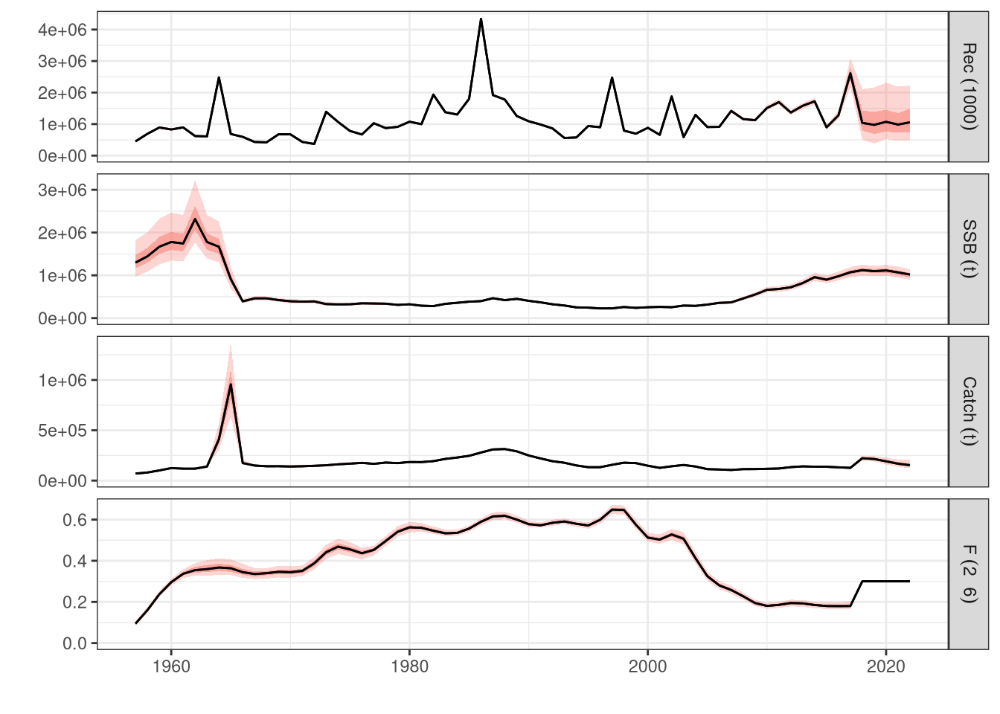
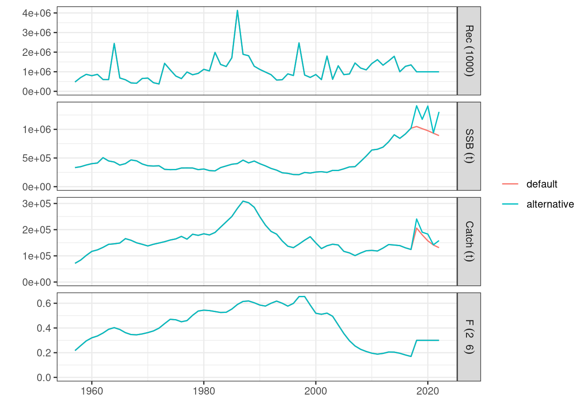

12 Reference Points
One of the primary objectives of stock assessment is the estimation of reference points. These serve as benchmarks for evaluating the outputs of assessment models and determining the status of a fish stock. Reference points are critical for effective fisheries management, guiding decisions on sustainable exploitation.
The most common classification of stock status is bidimensional, comparing exploitation levels and biomass sizes against target reference points. This framework allows for the assessment of whether a stock is overfished or experiencing overfishing:
Exploitation Levels: Typically represented by fishing mortality (F), overfishing occurs when F exceeds the target reference point. Conversely, if F is below the reference, the stock is considered to be sustainably fished.
Biomass Size: Commonly measured by spawning stock biomass (SSB), stocks are deemed overfished if the SSB falls below the reference point.
These assessments often utilize tools like the Kobe plot, which visually represents stock status in relation to these metrics.
In addition to target reference points, limit reference points (LRPs) are commonly included in stock assessments. These represent thresholds that should not be crossed, as they signal a high risk of stock collapse or significant uncertainty in population dynamics. Effective management aims to maintain fishing pressure and biomass levels within safe biological limits, ensuring long-term sustainability and reducing the risk of adverse outcomes.
Advancements in stock assessment science continue to refine these reference points. For example, Maximum Sustainable Yield (MSY) and its proxies, such as B\(_{MSY}\) (biomass at MSY) and F\(_{MSY}\) (fishing mortality at MSY), remain widely used.
These reference points are related with the stock’s productivity, which in itself is a complex interaction between recruitment, growth and mortality processes.
Recruitment is the process of input to the population, it defines the number of fish that will enter the population and are vulnerable to fishing. It encompasses the process of spawning, which depends on the reproductive potential of the individuals, and the survivability of the laervae up to entering the fishery, which mostly depends on environmental conditions. Individual growth defines the time needed for an individual to gain weight, grow in length and eventualy mature and spawn. Mortality is commonly split between mortality caused by fishing and mortality caused by natural events. Natural mortality merges together all factors by which an individual may die and are not related to fishing, for example predation from other species. These processes, recruitment, individual growth and natural mortality depend on a mix of interactions between environmental conditions and species’ biology.
Fishing mortality on the other hand is mostly dependent on the human factor, it’s related with the choice to fish and the way to fish. It’s the outcome of the effort the fleet deploys, the selectivity of the gear used and the availability of individuals. For example, the productivity of the stock will be different if the fleet fishes in an area with lots of young fish using a small mesh size, from a fleet fishing in an area where young fish are not common and using a large mesh size.
For this section we’ll be using the package FLBRP [] from the FLR family of packages.
library(FLBRP)
library(FLa4a)
data(ple4)
data(ple4.indices)
fit0 <- sca(ple4, ple4.indices)
stk0 <- ple4 + fit0To proceed with the computation of reference points we must start by creating an FLBRP object and afterwards run the fitting process with brp(). The FLBRP class has information on selection pattern, mass at age, and biological parameters. The information is stored in the object’s slots which can be accessed with the usual commands, respectively catch.sel(), discards.sel(), stock.wt(), catch.wt(), discards.wt(), m() and mat(). These quantities are computed by averaging the 3 most recent years of the relevant stock object slots. In the case of the selection pattern it is computed by scaling F-at-age to a maximum of 1. By default FLBRP creates a harvest slot with 100 computations of fishing mortality at age scaled from \(\bar{F}=0\) up to \(F_{crash}\) or \(\bar{F}=4\), if the former isn’t possible to compute, which is later used to compute the reference points.
A number of parameters can be set by the user to create the FLBRP object:
| Argument | Default value | Description |
|---|---|---|
| fbar | seq(0, 4, length.out = 101) | |
| nyears | 3 | |
| biol.nyears | nyears | |
| fbar.nyears | nyears | |
| sel.nyears | ||
| fbar.nyears | ||
| na.rm | TRUE | |
| mean | “arithmetic” |
12.1 Yield per recruit reference points
In the case where no stock recruitment relationship exists, or was fitted, brp() will return yield per recruit reference points. By default it computes biomasses in the absence of fishing, also know as virgin biomass, \(F_{MAX}\), \(F_{0.1}\) and 40% Spawning per recruit reference points.
## An object of class "FLBRP"
##
## Name:
## Description:
## Quant: age
## Dims: age year unit season area iter
## 10 101 1 1 1 1
##
## Range: min max pgroup minfbar maxfbar
## 1 10 10 2 6
##
##
## Model: rec ~ a
## params
## iter a
## 1 1
##
## refpts: calculatedThe selection pattern and other quantities can be depicted by calling plot() on the specific FLBRP object’s slot.


To extract a table with all reference points one uses the method refpts(). Note in this case \(F_{msy}\) is the same as \(F_{max}\), since the assumed stock recruitment is mean recruitment.
## An object of class "FLPar"
## quant
## refpt harvest yield rec ssb biomass revenue cost
## virgin 0.00e+00 0.00e+00 1.00e+00 3.42e+00 3.53e+00 NA NA
## msy 2.10e-01 7.08e-02 1.00e+00 9.44e-01 1.03e+00 NA NA
## crash 1.47e+01 6.02e-06 1.00e+00 4.38e-06 2.87e-02 NA NA
## f0.1 1.58e-01 6.85e-02 1.00e+00 1.28e+00 1.38e+00 NA NA
## fmax 2.10e-01 7.08e-02 1.00e+00 9.44e-01 1.03e+00 NA NA
## spr.30 1.96e-01 7.06e-02 1.00e+00 1.03e+00 1.12e+00 NA NA
## mey NA NA NA NA NA NA NA
## quant
## refpt profit
## virgin NA
## msy NA
## crash NA
## f0.1 NA
## fmax NA
## spr.30 NA
## mey NA
## units: NA## An object of class "FLPar"
## quant
## refpt harvest yield rec ssb biomass revenue cost profit
## msy 0.2099 0.0708 1.0000 0.9436 1.0349 NA NA NA
## fmax 0.2099 0.0708 1.0000 0.9436 1.0349 NA NA NA
## units: NAThe depiction of the reference points with the method plot() shows recruitment as constant over all levels of biomass and set to \(1\).

12.2 Stock recruitment relationship based reference points
An important way to improve reference points is to include stock recruitment dynamics. Yield per recruit, as in previous section, ignores this dynamics and assumes recruitment will be the same no matter SSB’s size, which is obviously wrong although in many cases due to unknown or very uncertain dynamics it’s the best one can do.
The stock recruitment model must be fitted before computing reference points and the FLSR object has to be passed to the FLBRP call to create the object that brp() method will use. There’s two ways of fitting stock recruitment models: (i) after fitting the stock assessment model by using its outputs, SSB and recruitment, as data to fit the model; (ii) inside the stock assessment model together with all other quantities. There’s pros and cons on both approaches, we’re not going to dwell on those now though.
12.2.1 Stock recruitment after fitting the stock assessment model
In the following example we’ll use a Beverton and Holt stock recruitment reltionship. There are several other relationships that can be used, see Table XX (ver ?bevholt())
| Model | Formula | Function | Description |
|---|---|---|---|
| Beverton and Holt | rec ~ a * ssb/(b + ssb) | bevholt() |
[REF] |
| Ricker [REF] | rec ~ a * ssb * exp(-b * ssb) | ricker() |
|
| Segmented regression [REF] | rec ~ ifelse(ssb <= b, a * ssb, a * b) | segreg |
|
| Cushing [REF] | rec ~ a * ssb^b | cushing |
|
| Shepherd [REF] | shepherd |
||
| Geomean [REF] | geomean |
## Nelder-Mead direct search function minimizer
## function value for initial parameters = -18.229811
## Scaled convergence tolerance is 2.71645e-07
## Stepsize computed as 138047.472012
## BUILD 3 -8.381087 -21.236493
## REFLECTION 5 -18.229811 -23.986923
## LO-REDUCTION 7 -21.236493 -23.986923
## HI-REDUCTION 9 -23.670348 -23.986923
## REFLECTION 11 -23.689833 -24.357493
## LO-REDUCTION 13 -23.986923 -24.517332
## LO-REDUCTION 15 -24.357493 -24.651322
## LO-REDUCTION 17 -24.517332 -24.735311
## LO-REDUCTION 19 -24.651322 -24.782483
## LO-REDUCTION 21 -24.735311 -24.826934
## LO-REDUCTION 23 -24.782483 -24.842111
## LO-REDUCTION 25 -24.826934 -24.866395
## HI-REDUCTION 27 -24.842111 -24.872880
## HI-REDUCTION 29 -24.866395 -24.884011
## LO-REDUCTION 31 -24.872880 -24.884011
## HI-REDUCTION 33 -24.879745 -24.884011
## EXTENSION 35 -24.882025 -24.888317
## EXTENSION 37 -24.884011 -24.897425
## EXTENSION 39 -24.888317 -24.904784
## EXTENSION 41 -24.897425 -24.937270
## EXTENSION 43 -24.904784 -24.940973
## EXTENSION 45 -24.937270 -25.043544
## LO-REDUCTION 47 -24.940973 -25.043544
## EXTENSION 49 -25.008191 -25.186152
## LO-REDUCTION 51 -25.043544 -25.186152
## EXTENSION 53 -25.161825 -25.335939
## EXTENSION 55 -25.186152 -25.540561
## LO-REDUCTION 57 -25.335939 -25.540561
## EXTENSION 59 -25.501589 -25.922665
## EXTENSION 61 -25.540561 -26.001469
## EXTENSION 63 -25.922665 -26.704604
## LO-REDUCTION 65 -26.001469 -26.704604
## LO-REDUCTION 67 -26.468110 -26.704604
## LO-REDUCTION 69 -26.695594 -26.704604
## HI-REDUCTION 71 -26.703662 -26.727696
## HI-REDUCTION 73 -26.704604 -26.729632
## HI-REDUCTION 75 -26.726736 -26.729632
## HI-REDUCTION 77 -26.727696 -26.731255
## HI-REDUCTION 79 -26.729632 -26.731255
## HI-REDUCTION 81 -26.731204 -26.731582
## HI-REDUCTION 83 -26.731255 -26.731744
## HI-REDUCTION 85 -26.731582 -26.731772
## HI-REDUCTION 87 -26.731744 -26.731820
## HI-REDUCTION 89 -26.731772 -26.731823
## HI-REDUCTION 91 -26.731820 -26.731835
## HI-REDUCTION 93 -26.731823 -26.731844
## LO-REDUCTION 95 -26.731835 -26.731844
## Exiting from Nelder Mead minimizer
## 97 function evaluations used
We now need to provide the FLSR object, sr0, to the FLBRP call and refit the reference points.
## rec ~ a * ssb/(b + ssb)
## <environment: 0x650b75d22d50>## An object of class "FLPar"
## params
## a b
## 1038832 9829
## units: NAThe new reference points can now be extracted using the refpts method with the FLBRP object as the main argument, and depict the relationships with plot(). Note this time by setting the flag obs to TRUE the plot will include the estimates of \(SSB\) and \(R\).
## An object of class "FLPar"
## quant
## refpt harvest yield rec ssb biomass revenue cost
## virgin 0.00e+00 0.00e+00 1.04e+06 3.54e+06 3.65e+06 NA NA
## msy 2.07e-01 7.28e+04 1.03e+06 9.87e+05 1.08e+06 NA NA
## crash 2.25e+00 1.11e-06 3.87e-04 3.66e-06 1.83e-05 NA NA
## f0.1 1.58e-01 7.06e+04 1.03e+06 1.32e+06 1.42e+06 NA NA
## fmax 2.10e-01 7.28e+04 1.03e+06 9.70e+05 1.06e+06 NA NA
## spr.30 1.96e-01 7.27e+04 1.03e+06 1.06e+06 1.15e+06 NA NA
## mey NA NA NA NA NA NA NA
## quant
## refpt profit
## virgin NA
## msy NA
## crash NA
## f0.1 NA
## fmax NA
## spr.30 NA
## mey NA
## units: NANote \(MSY\) based reference points are no longer the same as \(F_{MAX}\), and recruitment is no longer constant over all \(SSB\) levels.

12.3 Economics reference points
We can add economic data to the FLBRP object to calculate economic based reference points, like maximum economic yield (MEY). We need to provide information about price, variable costs and fixed costs. The first in value at age per weight of fish, the others in value per unit of fishing mortality.
# price
price(brp0) <- c(rep(1,3),rep(1.5,2),rep(2,5))
price(brp0)@units <- "1000 euro per ton"
# variable costs per F
vcost(brp0) <- 100000
vcost(brp0)@units <- "1000 euro per F"
# fixed costs per F
fcost(brp0) <- 50000
fcost(brp0)@units <- "1000 euro per F"
# reference points
brp0 <- brp(brp0)
refpts(brp0)## An object of class "FLPar"
## quant
## refpt harvest yield rec ssb biomass revenue cost
## virgin 0.00e+00 0.00e+00 1.04e+06 3.54e+06 3.65e+06 0.00e+00 5.00e+04
## msy 2.07e-01 7.28e+04 1.03e+06 9.87e+05 1.08e+06 1.21e+05 7.07e+04
## crash 2.25e+00 1.11e-06 3.87e-04 3.66e-06 1.83e-05 1.15e-06 2.75e+05
## f0.1 1.58e-01 7.06e+04 1.03e+06 1.32e+06 1.42e+06 1.20e+05 6.58e+04
## fmax 2.10e-01 7.28e+04 1.03e+06 9.70e+05 1.06e+06 1.21e+05 7.10e+04
## spr.30 1.96e-01 7.27e+04 1.03e+06 1.06e+06 1.15e+06 1.22e+05 6.96e+04
## mey 2.19e-01 7.27e+04 1.03e+06 9.22e+05 1.02e+06 1.21e+05 7.19e+04
## quant
## refpt profit
## virgin -5.00e+04
## msy 5.07e+04
## crash -2.75e+05
## f0.1 5.38e+04
## fmax 5.03e+04
## spr.30 5.21e+04
## mey 4.89e+04
## units: NAThe reference points table is now complete with values for revenue, costs and profit, as well as estimtes for \(MEY\) based reference points. The point where profits are maximized, instead of the point where catch is maximized as in the case of MSY.
12.4 Computing user specific reference points
There is an option to calculate user defined reference points given a target F:
## An object of class "FLPar"
## quant
## refpt harvest yield rec ssb biomass revenue cost
## virgin 0.00e+00 0.00e+00 1.04e+06 3.54e+06 3.65e+06 0.00e+00 5.00e+04
## msy 2.07e-01 7.28e+04 1.03e+06 9.87e+05 1.08e+06 1.21e+05 7.07e+04
## crash 2.25e+00 1.11e-06 3.87e-04 3.66e-06 1.83e-05 1.15e-06 2.75e+05
## f0.1 1.58e-01 7.06e+04 1.03e+06 1.32e+06 1.42e+06 1.20e+05 6.58e+04
## fmax 2.10e-01 7.28e+04 1.03e+06 9.70e+05 1.06e+06 1.21e+05 7.10e+04
## spr.30 1.96e-01 7.27e+04 1.03e+06 1.06e+06 1.15e+06 1.22e+05 6.96e+04
## mey 2.19e-01 7.27e+04 1.03e+06 9.22e+05 1.02e+06 1.21e+05 7.19e+04
## Ftrgt1 3.30e-01 6.53e+04 1.02e+06 4.95e+05 5.80e+05 1.05e+05 8.30e+04
## Ftrgt2 4.40e-01 5.37e+04 1.00e+06 2.81e+05 3.58e+05 8.27e+04 9.40e+04
## quant
## refpt profit
## virgin -5.00e+04
## msy 5.07e+04
## crash -2.75e+05
## f0.1 5.38e+04
## fmax 5.03e+04
## spr.30 5.21e+04
## mey 4.89e+04
## Ftrgt1 2.16e+04
## Ftrgt2 -1.13e+04
## units: NAOr create an empty FLPar with specified reference points and recalculate everything:
#brp2 <- FLPar(NA,dimnames=list(refpt=c("virgin","f0.1","fmax","spr.30","spr.35","spr.45"), quantity=c("harvest","yield","rec","ssb","biomass","revenue","cost","profit"), iter=1))
brp2 <- brp1
brp2@refpts <- FLPar(NA, dimnames=list(refpt = c("virgin", "f0.1", "fmax", "spr.30", "spr.35","spr.45"), quantity=c("harvest", "yield", "rec", "ssb", "biomass", "revenue", "cost", "profit"), iter=1))
brp2 <- brp(brp2)
refpts(brp2)## An object of class "FLPar"
## quantity
## refpt harvest yield rec ssb biomass revenue cost
## virgin 0.00e+00 0.00e+00 1.04e+06 3.54e+06 3.65e+06 0.00e+00 5.00e+04
## f0.1 1.58e-01 7.06e+04 1.03e+06 1.32e+06 1.42e+06 1.20e+05 6.58e+04
## fmax 2.10e-01 7.28e+04 1.03e+06 9.70e+05 1.06e+06 1.21e+05 7.10e+04
## spr.30 1.96e-01 7.27e+04 1.03e+06 1.06e+06 1.15e+06 1.22e+05 6.96e+04
## spr.35 1.69e-01 7.16e+04 1.03e+06 1.23e+06 1.33e+06 1.21e+05 6.69e+04
## spr.45 1.27e-01 6.64e+04 1.03e+06 1.59e+06 1.69e+06 1.13e+05 6.27e+04
## quantity
## refpt profit
## virgin -5.00e+04
## f0.1 5.38e+04
## fmax 5.03e+04
## spr.30 5.21e+04
## spr.35 5.38e+04
## spr.45 5.07e+04
## units: NAOne specific case is to compute \(F_{MSY}\) ranges according to Hilborn (2010) and Rindorf et al. (2016) ideas. For this case there’s already the method msyRanges, which takes as argument a fitted FLBRP object and delivers a FLPar object, similar to refpts.
## An object of class "FLPar"
## quantity
## refpt harvest yield rec ssb biomass revenue cost profit
## msy 2.07e-01 7.28e+04 1.03e+06 9.87e+05 1.08e+06 1.21e+05 7.07e+04 5.07e+04
## min 1.45e-01 6.92e+04 1.03e+06 1.43e+06 1.53e+06 1.18e+05 6.45e+04 5.31e+04
## max 2.87e-01 6.92e+04 1.02e+06 6.26e+05 7.14e+05 1.12e+05 7.87e+04 3.36e+04
## units: NAAnother simple way, although it onl;y works for \(SPR\) based reference points, is to include other spr.## points in the refpts table.